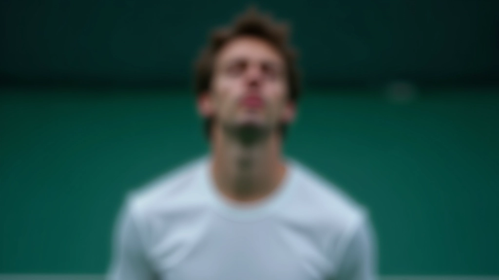
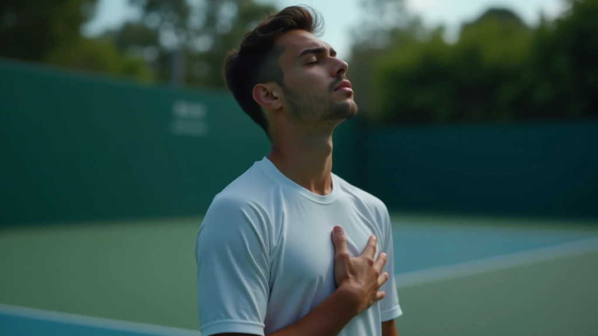
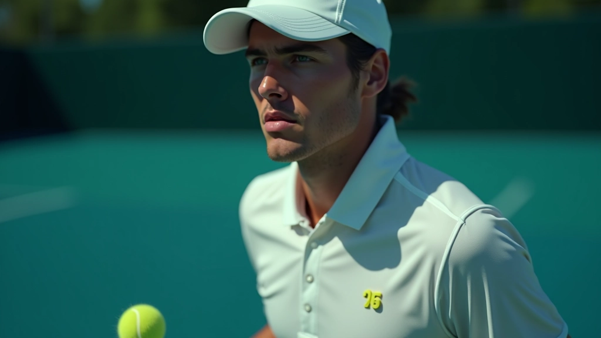
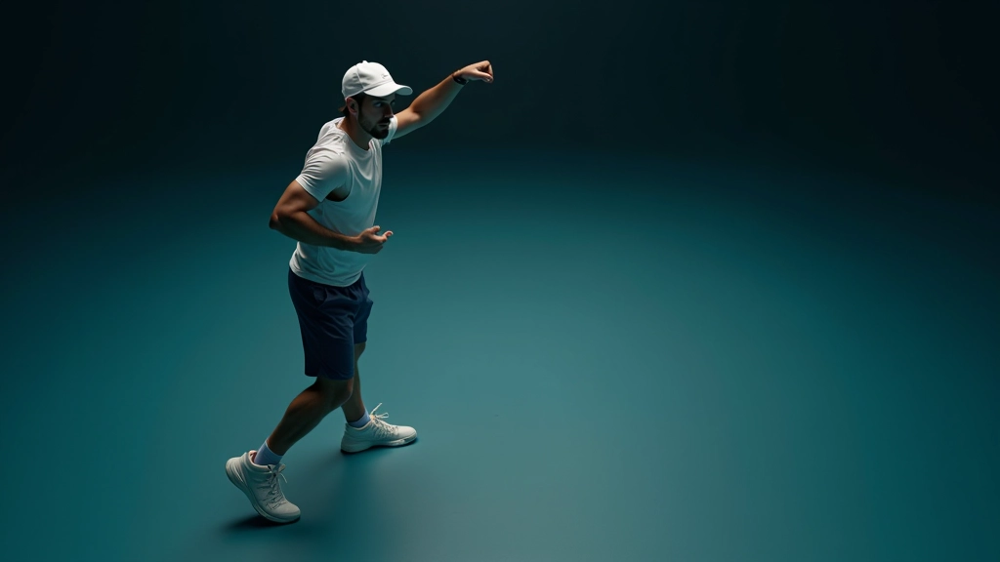
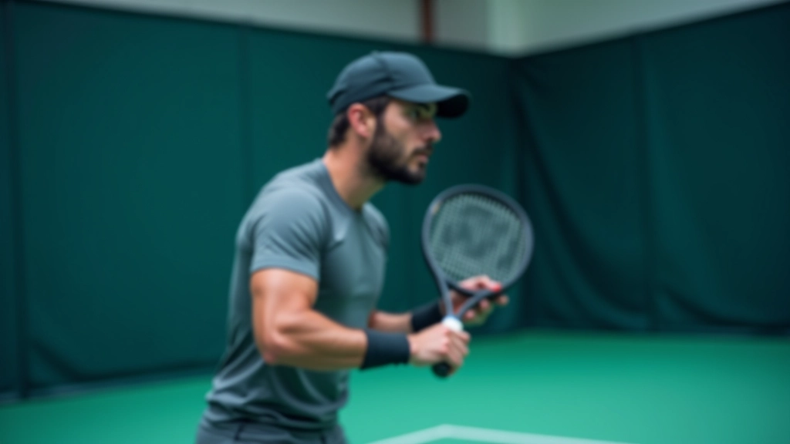

بناء التركيز الذهني قبل المباراة
تقنيات عملية لتهيئة ذهنك وجسدك قبل الدخول إلى الملعب. خطوات بسيطة لكن فعّالة جداً...
ما الذي يفعله اللاعبون المحترفون عندما يخسرون نقطة مهمة. أساليب سريعة لتهدئة الأعصاب والعودة للتركيز.


من إعداد فريق التحرير بأكاديمية الذهن للتنس، متخصصون في تقديم إرشادات عملية وسهلة الفهم حول التركيز الذهني واستراتيجية المباراة.
خسارة نقطة مهمة ليست مجرد إحباط. إنها نقطة تحول في المباراة. الضغط يرتفع، القلق يبدأ بالانتشار، والعقل يبدأ في التركيز على النتيجة بدلاً من اللعب. هذا هو بالضبط ما يريده خصمك.
لكن اللاعبين المحترفين يعرفون سراً واحداً: يمكنك التحكم في رد فعلك. لا تستطيع السيطرة على النقاط التي خسرتها، لكن يمكنك السيطرة على الدقائق التالية. هذا ما نتحدث عنه اليوم — أدوات حقيقية تعيدك للتركيز بسرعة.

طرق مجربة لاستعادة السيطرة عندما يشعر الضغط بأنه كبير جداً.
أول شيء يحدث عندما تفقد نقطة مهمة: يصبح تنفسك سريعاً وضحلاً. تلاحظ لاعبو الدوري الأول هذا فوراً ويعاكسونه. خذ نفساً عميقاً لمدة 4 ثوانٍ، احبسه لمدة 2 ثانية، ثم أطلقه لمدة 4 ثوانٍ. كرر هذا ثلاث مرات بين النقاط. لا تحتاج إلى أي تطبيق خاص أو موسيقى — فقط تنفس.
هذا يقول لجهازك العصبي: "لا توجد حالة طوارئ". عندما يهدأ جسدك، يهدأ عقلك أيضاً. في ثوانٍ قليلة، تصبح مستعداً للنقطة التالية.

عقلك يريد أن يقول لك: "يا إلهي، خسرت النقطة الأخيرة المهمة. ماذا لو خسرت المباراة؟" هذا هو الفخ. أنت لا تلعب المستقبل — أنت تلعب الآن.
تقنية بسيطة: ركز على شيء حسي واحد فقط. انظر إلى الكرة وهي ترتد. استمع إلى صوت الرضة. أشعر بأرجل الملعب تحت قدميك. هذا يرجع عقلك من المستقبل القلق إلى اللحظة الحالية. وهذه هي اللحظة الوحيدة التي يمكنك فيها التحكم في النتيجة.

لا نتحدث عن "أنت تستطيع فعل ذلك!" المزعجة. نتحدث عن شيء محدد وقابل للتحقق. بدلاً من الحديث السلبي ("يا إلهي، أنا سيء")، استبدله بتعليق مركز على الحركة التالية. مثل: "الخطوة الجانبية أولاً" أو "اتبع خلال". كلمة أو اثنتان فقط.
هذا يفعل شيئين: يوقف حلقة القلق في رأسك، ويعطي عقلك عملاً بناءً يركز عليه. في ثوانٍ، تكون قد انتقلت من "أنا قلق" إلى "أنا جاهز للنقطة التالية".

لا يمكنك تعلم هذه التقنيات في يوم المباراة. عقلك لن يتذكرها عندما يكون تحت الضغط. لكن إذا مارستها الآن، ستصبح عادة.
عندما تفقد نقطة مهمة في التدريب، طبق التقنيات. ليس في المباراة — الآن. أثناء التمرين. هذا يجعلها طبيعية.
ابدأ بتقنية واحدة فقط. أتقنها. ثم أضف الثانية. بعد أسبوعين من التطبيق، ستشعر أن الثلاث تقنيات تعمل معاً تلقائياً.
في مباراتك القادمة، اختر نقطة واحدة حيث تشعر عادة بالضغط الشديد. طبق التقنيات هناك. هذا كل شيء.

الضغط جزء من اللعبة. لا يمكنك إزالته. لكن يمكنك تغيير ردود أفعالك تجاهه. التنفس، إعادة التركيز، والحوار الموجز — هذه أدوات بسيطة لكنها قوية جداً.
المحترفون لا يشعرون بضغط أقل من باقي اللاعبين. هم فقط يعرفون كيفية إدارته. الآن أنت تعرف أيضاً. الخطوة التالية؟ اذهب وتدرب.
تذكر: اللاعب الذي يستطيع البقاء هادئاً تحت الضغط لا ينتظر حتى المباراة الكبيرة ليبدأ التدريب. يبدأ الآن.
هذا المقال هو للأغراض التعليمية فقط وليس بديلاً عن المشورة المهنية. إذا واجهت قلقاً شديداً أو مشاكل نفسية تؤثر على أدائك الرياضي، يرجى استشارة متخصص صحي مؤهل.
تقنيات عملية لتهيئة ذهنك وجسدك قبل الدخول إلى الملعب. خطوات بسيطة لكن فعّالة جداً...

كيف تلاحظ نقاط ضعف الخصم وتعدّل استراتيجيتك بسرعة خلال المباراة. يستغرق التعلم و...

كيفية الحفاظ على مستوى عالٍ من الثقة من البداية حتى النهاية. استراتيجيات نفسية م...